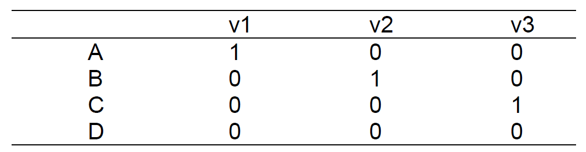
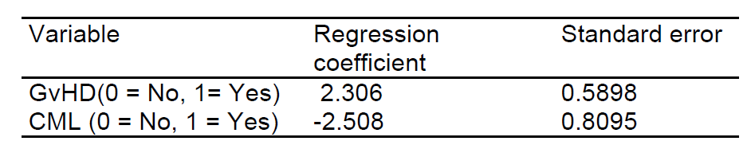

Medical Statistics – Lab 9
SPSS version
Part 1: Analysis of overall survival in the Worcester Heart Attack study
In this section, we are going to continue analyzing the Worcester Heart Attack Study (WHAS) dataset (file whas500.sav). The outcome of interest for today’s analysis is overall survival, defined as the time from hospital admission to death from any cause. This information is captured in the variable lenfol (length of follow-up in days) and the variable fstat (follow-up status; dead or censored).
Association between MI order and overall survival
The variable miord represents the sequence of myocardial infarction (MI) events, categorized as either a first MI or a recurrent MI. Our aim is to analyze the relationship between MI order and overall survival outcomes.
Kaplan-Meier survival curves and logrank test
We start by constructing a Kaplan-Meier survival curve to compare the survival probabilities between patients with a first MI and those with a recurrent MI.
Go to Analyze -> Survival -> Kaplan-Meier. Select the lenfol variable as the Time and the fstat variable as the Status variable. Click on Define Event, enter 1 as the event code, and press Continue to return to the main dialog. Move the miord variable to the Factor box. Click on Compare Factor and select Log Rank. Press Continue to return to the main dialog. Click on Options and under Plots select Survival. Click on Continue to return to the main dialog and subsequenly on Ok to run the analysis.
Cox regression
Next, we will perform a Cox proportional hazards regression analysis to assess the association between MI order and overall survival while adjusting for potential confounders. We will start with the unadjusted model:
Go to Analyze -> Survival -> Cox Regression. Select the lenfol variable as the Time, the fstat variable as the Status variable, and define the event indicator. Move the miord variable to the Covariates box (Block 1 of 1). Press Categorical and move the miord variable to the Categorical Covariates box. Press Continue to return to the main dialog. Click on Ok to run the analysis.
Now, let’s adjust the Cox regression model using age and gender as potential confounders:
Go to Analyze -> Survival -> Cox Regression. Select the lenfol variable as the Time, the fstat variable as the Status variable, and define the event indicator. Move the miord, age, and gender variables to the Covariates box (Block 1 of 1). Press Categorical and move the miord and gender variables to the Categorical Covariates box. Press Continue to return to the main dialog. Click on Ok to run the analysis.
Part 2: Unguided exercises
Excercise 1
File Ex9_1.sav (available from the Datasets menu) contains data from a small experiment concerning motion sickness at sea (Burns, 1984). Subjects were placed in a cabin subjected to vertical motion for two hours. The outcome variable was the waiting time to emesis (vomiting). Some subjects requested an early stop to the experiment although they had not vomited, yielding censored observations, while others successfully survived two hours. The experiment was carried out with two “treatments”: two combinations of movement accelerations and frequency. One combination was used for a group of 21 subjects, the other in a different group of 28 subjects.
Calculate and plot Kaplan-Meier estimates of survival probabilities in the two groups.
Calculate the 95% CI for the difference between survival probabilities of the two groups after 60 minutes.
Compare the two survival curves by logrank test.
Use Cox regression to compare the two treatments; compare the result to that of the logrank test; calculate the hazard ratio and its 95% CI.
Two different persons undergo the experiment with different treatments. Estimate the probability that the waiting time until emesis under one of the treatments exceeds that under the other treatment.
Exercise 2
Subfertile women with a child wish may receive an in-vitro fertilization (IVF) treatment. In an observational study the waiting time until pregnancy was recorded. The women undergoing the IVF treatment were categorized (prior to the start of the treatment) in four groups, A, B, C and D, with respect to the type of infertility. The waiting times – some of them censored - of the groups were compared by means of Cox regression with the group variable entered as a categorical variable. The P-value of the Wald test with 3 df was 0.095. The dummy-variables v1, v2 and v3 were defined as follows:
The hazard ratios and P-values for the dummy variables v1, v2 and v3 were reported as 1.20 (P=0.30), 2.80 (P=0.02) and 1.05 (P=0.48).
Which group is estimated to have the longest waiting time for pregnancy?
A researcher compared all pairs of groups by separate tests. She used the Bonferroni method to keep the type-I error of the entire procedure below 10%. Which differences were found to be significant?
Which assumptions are needed for the validity of Cox regression in this case?
Exercise 3
Relation between survival and a number of variables was studied in 37 patients having a bone marrow transplant. Cox regression analysis using the occurrence of acute graft-versus-host disease (GvHD=1 if present and GvHD=0 if absent), diagnosis, recipient’s age and sex, donor’s age and sex, whether the donor had been pregnant and the type of the leukemia (CML=1 if chronic myeloid leukemia and CML=0 otherwise) yielded the following model:

What is the interpretation of the opposite signs for the regression coefficients?
Calculate the relative risks of dying (hazard ratio) for the following patients relative to non-GvHD non-CML patients (i) with GvHD but not CML, (ii) CML but without GvHD, (iii) CML and GvHD.